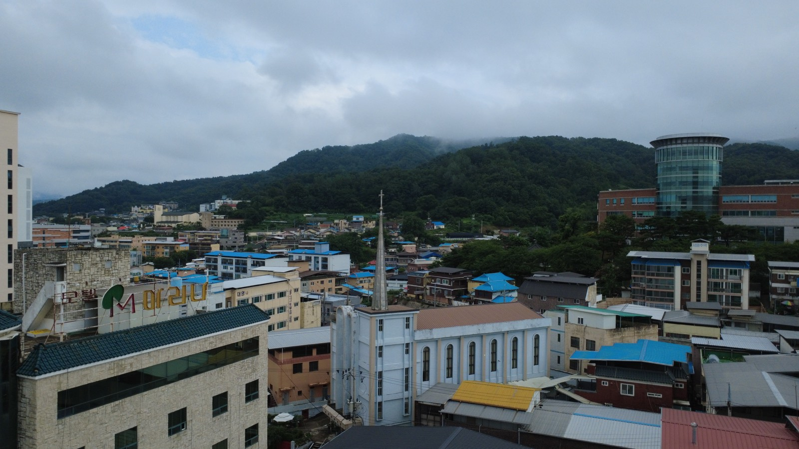
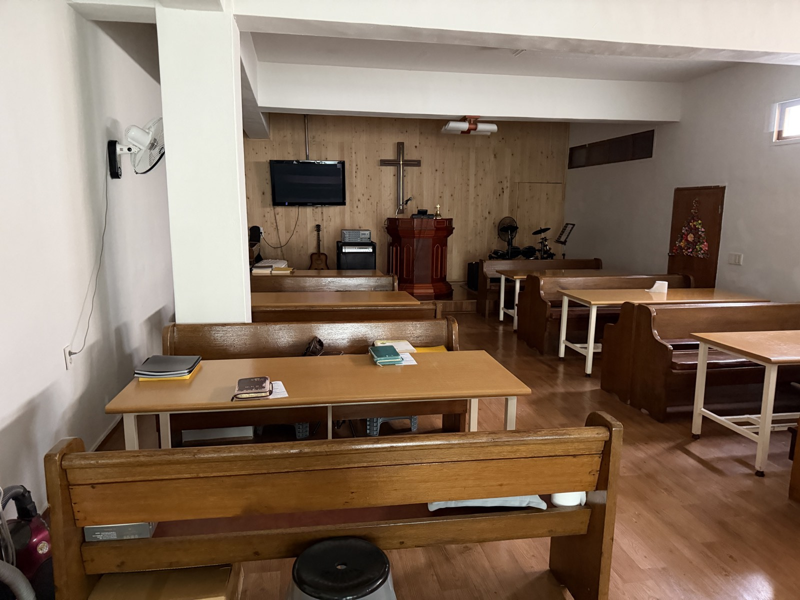
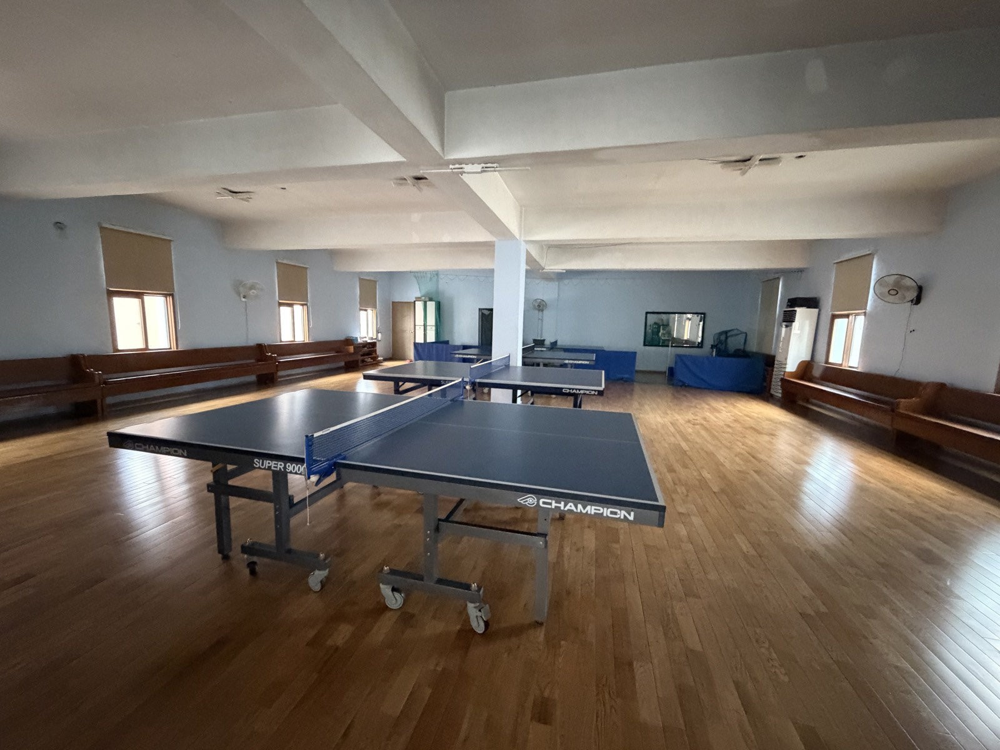
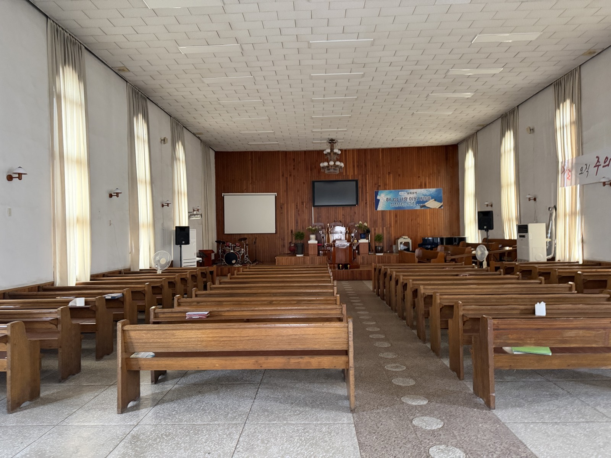
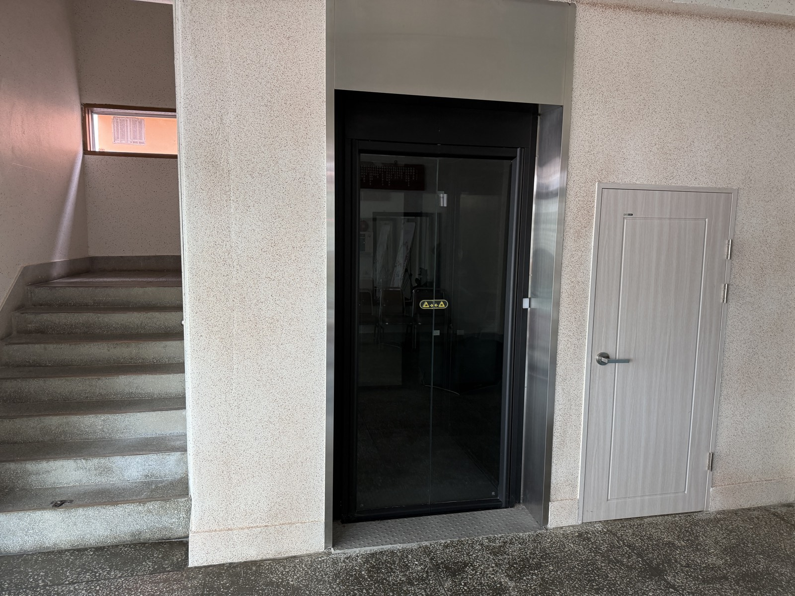

김천침례교회는 1951년, 전쟁의 상처가 채 아물지 않은 시기에 열한 명의 성도가 모여 말씀을 선포함으로써 시작된 기독교 한국침례회 소속 교회입니다.
74년의 세월 동안 여러 차례 성전을 세우고 다듬으며, 말씀과 기도 위에 굳게 서서 지역을 섬겨 왔습니다. 오늘도 저희 교회는 “새 시대로 나아가는 교회”로서 다음 세대와 이웃을 향해 나아가고 있습니다.


소규모 예배와 성경공부, 각종 모임이 이루어지는 아담한 예배 공간입니다.

2013년 남전도회 주도로 개설한 교회 부설 탁구장(40평). 탁구대 4대·탁구로봇을 갖추고 김천시체육회 코치의 지도가 이루어집니다.

1985년 신축·입당한 본 예배당으로, 주일예배가 드려지는 교회의 중심 공간입니다.

2025년 창립 74주년을 맞아 완공한 승강기(320kg). 어르신과 몸이 불편하신 분들도 층간 이동을 편하게 하실 수 있습니다.